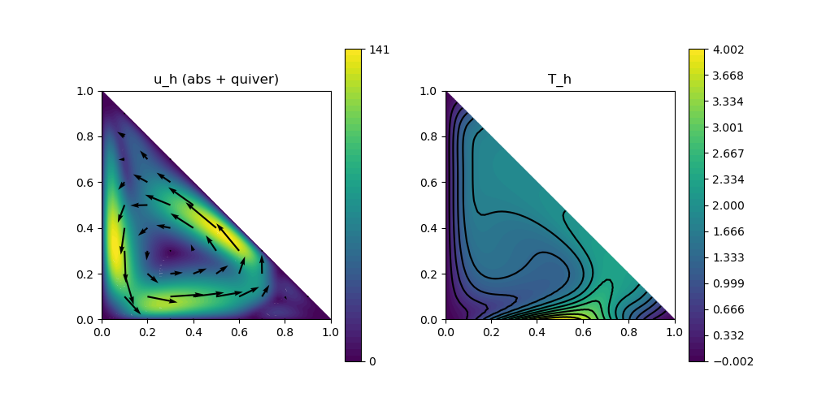

235 : Natural Convection Triangle 2D
This example solves the natural convection (or Boussinesque) problem on a triangular domain $\Omega = \mathrm{conv}\lbrace (0,0),(1,0),(0,1) \rbrace$. Altogether, we are looking for a velocity $\mathbf{u}$, a pressure $\mathbf{p}$ and a stemperature $T$ such that
\[\begin{aligned} - \Delta \mathbf{u} + (\mathbf{u} \cdot \nabla) \mathbf{u} + \nabla p & = Ra \mathbf{e}_2 T\\ \mathrm{div}(u) & = 0\\ - \Delta \mathbf{T} + \mathbf{u} \cdot \nabla \mathbf{T} & = 0 \end{aligned}\]
with some parameter $Ra$. The velocity has zero Dirichlet boundary conditions, while the temperature is zero along the y-axis, trigonometric along the x-axis and do-nothing at the diagonal boundary of the triangular domain.
Two possible solution strategies are implemented here. The first is Newton's method. For this both nonlinear operators are assigned as auto-differentiated operators. Note, that the nonlinearity in the tmeperature equation involves both unknowns u and T and hence leads to two assigned matrix blocks in the equation for T. However, a direct Newton solve only works smooth for small or moderate $Ra$ (circa up to 1e5).
Therefore, for larger $Ra$, Anderson acceleration can be used which is triggered by setting anderson = true
Also, note that a divergence-free reconstruction operator is used for the velocity, which also helps with the convergence and accuracy of the lowest-order method for this test problem.
module Example235_NaturalConvectionTriangle2D
using GradientRobustMultiPhysics
using ExtendableGrids
using GridVisualize
# boundary data for temperature on bottom
T_bottom = DataFunction((T,x) -> (T[1] = 2*(1-cos(2*pi*x[1]))), [1,2]; dependencies = "X", bonus_quadorder = 4)
# everything is wrapped in a main function
function main(; verbosity = 0, Plotter = nothing, Ra = 1e5, μ = 1, nrefinements = 6, anderson = false)
# set log level
set_verbosity(verbosity)
# load mesh and refine
xgrid = reference_domain(Triangle2D)
xgrid = uniform_refine(xgrid, nrefinements)
# types for discretisation by Bernardi--Raugel pressure-robust (BDM1 reconstruction) + P1-FEM for temperature
FETypes = [H1BR{2}, H1P0{1}, H1P1{1}];
RIdentity = ReconstructionIdentity{HDIVBDM1{2}}
# load Stokes prototype and add a unknown for the temperature
Problem = IncompressibleNavierStokesProblem(2; viscosity = μ, nonlinear = false, store = true)
add_unknown!(Problem; unknown_name = "T", equation_name = "temperature equation")
Problem.name = "natural convection problem"
# add convection term for velocity
add_operator!(Problem, [1,1], ConvectionOperator(1, RIdentity, 2, 2; test_operator = RIdentity, newton = !anderson))
# add boundary data for velocity (unknown 1) and temperature (unknown 3)
add_boundarydata!(Problem, 1, [1,2,3], HomogeneousDirichletBoundary)
add_boundarydata!(Problem, 3, [1], BestapproxDirichletBoundary; data = T_bottom)
add_boundarydata!(Problem, 3, [3], HomogeneousDirichletBoundary)
# add Laplacian to temperature equation
add_operator!(Problem,[3,3], LaplaceOperator(1.0; store = true, name = "∇(T)⋅∇(V)"))
# add coupling terms for velocity and temperature (convection + gravity)
if anderson
add_operator!(Problem,[3,3], ConvectionOperator(1, RIdentity, 2, 1; name = "(R(u)⋅∇(T)) V"))
else #if newton
function Tconvection_kernel(result, input)
# input = [id(u),∇T]
result[1] = input[1]*input[3] + input[2]*input[4]
return nothing
end
function Tconvection_jacobian(jac, input)
jac[1,1] = input[3]
jac[1,3] = input[1]
jac[1,2] = input[4]
jac[1,4] = input[2]
return nothing
end
add_operator!(Problem,3, NonlinearForm(Identity, [RIdentity,Gradient], [1,3], Tconvection_kernel, [1,4]; name = "(R(u)⋅∇(T)) V", jacobian = Tconvection_jacobian, newton = true))
end
vdotg_action = Action((result, input) -> (result[1] = -input[2]), [1 2]; name = "v⋅g")
add_operator!(Problem,[1,3], BilinearForm([RIdentity, Identity], vdotg_action; factor = Ra, name = "-Ra v⋅g T", store = true))
# show final problem description
@show Problem
# construct FESpaces and Solution veector
FES = [FESpace{FETypes[1]}(xgrid), FESpace{FETypes[2]}(xgrid), FESpace{FETypes[3]}(xgrid)]
Solution = FEVector(["v_h", "p_h", "T_h"],FES)
# solve (fixedpoint iteration by solving consecutively equations [3] and [1,2] + Anderson acceleration)
if anderson
solve!(Solution, Problem; subiterations = [[3],[1,2]], maxiterations = 100, target_residual = 1e-8, anderson_iterations = 5, anderson_metric = "l2", anderson_unknowns = [1,3], anderson_damping = 0.95, show_solver_config = true, show_statistics = true)
else
solve!(Solution, Problem; maxiterations = 100, target_residual = 1e2, damping = 0.55, show_solver_config = true, show_statistics = true)
solve!(Solution, Problem; maxiterations = 100, target_residual = 1e-8, damping = 0, show_solver_config = false, show_statistics = true)
end
# compute Nusselt number along bottom boundary
NuIntegrator = ItemIntegrator([Jump(Gradient)], vdotg_action; AT = ON_BFACES, regions = [1])
println("\tNu = $(evaluate(NuIntegrator,Solution[3]))")
# plot
p = GridVisualizer(; Plotter = Plotter, layout = (1,2), clear = true, resolution = (1000,500))
scalarplot!(p[1,1],xgrid,view(nodevalues(Solution[1]; abs = true),1,:), levels = 0)
vectorplot!(p[1,1],xgrid,evaluate(PointEvaluator(Solution[1], Identity)), spacing = 0.1, clear = false, title = "u_h (abs + quiver)")
scalarplot!(p[1,2],xgrid,view(nodevalues(Solution[3]),1,:), levels = 11, title = "T_h")
end
endThis page was generated using Literate.jl.
Default output:
julia> Example235_NaturalConvectionTriangle2D.main()
Explored path: SparsityDetection.Path(Bool[], 1)
Explored path: SparsityDetection.Path(Bool[], 1)
Problem =
PDE-DESCRIPTION
===============
system name = natural convection problem
id | unknown name / equation name
[1] | u / momentum equation
[2] | p / incompressibility constraint
[3] | T / temperature equation
LHS block | PDEOperator(s)
[1,1] | (∇u,∇v) (APT = SymmetricBilinearForm, AT = ON_CELLS, regions = [0])
| ((R(u) ⋅ ∇) u, R(v)) [Newton] [∂u] (APT = NonlinearForm, AT = ON_CELLS, regions = [0])
[1,2] | (div(v),q) (APT = BilinearForm, AT = ON_CELLS, regions = [0])
[1,3] | -Ra v⋅g T (APT = BilinearForm, AT = ON_CELLS, regions = [0])
[2,1] | none
[2,2] | none
[2,3] | none
[3,1] | (R(u)⋅∇(T)) V [Newton] [∂u] (APT = NonlinearForm, AT = ON_CELLS, regions = [0])
[3,2] | none
[3,3] | ∇(T)⋅∇(V) (APT = SymmetricBilinearForm, AT = ON_CELLS, regions = [0])
| (R(u)⋅∇(T)) V [Newton] [∂T] (APT = NonlinearForm, AT = ON_CELLS, regions = [0])
RHS block | PDEOperator(s)
[1] | none
[2] | none
[3] | none
BoundaryOperator[1] : HomogeneousDirichletBoundary -> [1, 2, 3]
BoundaryOperator[2] :
BoundaryOperator[3] : BestapproxDirichletBoundary -> [1]
HomogeneousDirichletBoundary -> [3]
GlobalConstraints[1] : Mean[2] != 0
SC =
SOLVER-CONFIGURATION
======================
overall nonlinear = true
overall timedependent = false
anderson_iterations = 0
subiterations = UnitRange{Int64}[1:3]
show_iteration_details = true
timedependent_equations = Any[]
anderson_unknowns = [1]
show_statistics = true
anderson_metric = l2
skip_update = [1]
linsolver = GradientRobustMultiPhysics.LinearSystem{Float64, Int64, LUFactorization}
damping = 0.55
time = 0
parallel_storage = false
show_solver_config = true
anderson_damping = 1
check_nonlinear_residual = true
fixed_penalty = 1.0e60
target_residual = 100.0
maxiterations = 100
AssemblyTriggers =
LHS_AT[1] : A I I
LHS_AT[2] : N N N
LHS_AT[3] : A N A
RHS_AT[1] : N
RHS_AT[2] : N
RHS_AT[3] : N
(I = Once, T = EachTimeStep/SubIteration, A = Always, N = Never)
LHS_dependencies = [[1] [1, 2] [1, 3]; [2, 1] [2] [2, 3]; [3, 1] [3, 2] [3, 1]]
ITERATION | LSRESIDUAL | NLRESIDUAL | TIME ASSEMBLY/SOLVE/TOTAL (s)
-----------------------------------------------------------------------
init | | 6.33e+00/4.80e-06/6.33e+00
1 | 7.416533e-12 | 1.433237e+03 | 1.43e+00/2.05e-01/1.64e+00
2 | 2.108232e-12 | 2.750999e+02 | 2.12e-01/2.43e-01/4.58e-01
3 | 5.506628e-13 | 9.036815e+01 | 2.05e-01/2.71e-01/4.79e-01
total | | 8.17e+00/7.19e-01/8.90e+00
ITERATION | LSRESIDUAL | NLRESIDUAL | TIME ASSEMBLY/SOLVE/TOTAL (s)
-----------------------------------------------------------------------
init | | 3.67e-01/3.60e-06/3.68e-01
1 | 4.169765e-11 | 2.112379e+05 | 2.06e-01/2.41e-01/4.54e-01
2 | 1.111443e-10 | 5.365524e+04 | 2.05e-01/2.34e-01/4.41e-01
3 | 3.013025e-11 | 1.330728e+04 | 2.06e-01/2.04e-01/4.12e-01
4 | 1.136980e-11 | 3.444090e+03 | 2.05e-01/2.08e-01/4.16e-01
5 | 9.977217e-12 | 4.307459e+03 | 2.05e-01/2.03e-01/4.11e-01
6 | 9.146072e-12 | 6.483890e+03 | 2.07e-01/2.23e-01/4.32e-01
7 | 9.414051e-12 | 3.903728e+03 | 2.07e-01/2.06e-01/4.16e-01
8 | 1.001354e-11 | 8.928768e+03 | 2.05e-01/2.05e-01/4.13e-01
9 | 6.455682e-11 | 1.437463e+05 | 2.06e-01/2.08e-01/4.16e-01
10 | 6.952887e-11 | 3.914091e+04 | 2.05e-01/2.25e-01/4.33e-01
11 | 3.406934e-11 | 2.727656e+04 | 2.05e-01/2.06e-01/4.14e-01
12 | 3.413617e-11 | 1.080289e+05 | 2.05e-01/2.05e-01/4.13e-01
13 | 1.314244e-10 | 1.053017e+06 | 2.06e-01/2.06e-01/4.15e-01
14 | 3.095961e-10 | 2.669577e+05 | 2.06e-01/2.18e-01/4.26e-01
15 | 9.294872e-11 | 1.082294e+05 | 2.06e-01/2.04e-01/4.13e-01
16 | 2.743994e-10 | 2.051467e+06 | 2.06e-01/2.12e-01/4.20e-01
17 | 4.068337e-09 | 9.120455e+07 | 2.06e-01/2.07e-01/4.15e-01
18 | 3.041257e-08 | 1.415595e+08 | 2.06e-01/2.22e-01/4.30e-01
19 | 9.176120e-08 | 1.283103e+09 | 2.05e-01/2.09e-01/4.17e-01
20 | 7.198181e-07 | 7.100610e+09 | 2.07e-01/2.15e-01/4.24e-01
21 | 1.647224e-04 | 7.986688e+13 | 2.06e-01/2.14e-01/4.23e-01
22 | 2.805304e-02 | 1.997611e+13 | 2.06e-01/2.29e-01/4.37e-01
23 | 9.481256e-03 | 4.193930e+13 | 2.05e-01/2.16e-01/4.24e-01
24 | 4.379849e-02 | 3.534179e+14 | 2.06e-01/2.14e-01/4.22e-01
25 | 2.324027e+00 | 9.964749e+16 | 2.06e-01/2.14e-01/4.22e-01
26 | 4.810543e+01 | 1.137403e+17 | 2.06e-01/2.34e-01/4.43e-01
27 | 3.451809e+02 | 6.944639e+18 | 2.05e-01/2.13e-01/4.21e-01
28 | 3.854010e+03 | 1.395507e+19 | 2.06e-01/2.16e-01/4.24e-01
29 | 1.316215e+04 | 7.861541e+19 | 2.07e-01/2.03e-01/4.12e-01
30 | 3.444711e+05 | 1.711975e+22 | 2.06e-01/2.22e-01/4.31e-01
31 | 6.431429e+06 | 1.400229e+22 | 2.06e-01/2.06e-01/4.15e-01
32 | 1.247631e+10 | 2.900576e+23 | 2.06e-01/1.94e-01/4.02e-01
33 | 3.196903e+11 | 4.652290e+24 | 2.06e-01/1.95e-01/4.03e-01
34 | 1.887818e+13 | 3.653021e+27 | 2.06e-01/2.04e-01/4.13e-01
35 | 6.076147e+14 | 3.670868e+27 | 2.07e-01/1.97e-01/4.06e-01
36 | 1.163011e+15 | 7.245866e+28 | 2.06e-01/2.01e-01/4.10e-01
37 | 6.646834e+16 | 6.368253e+30 | 2.05e-01/1.94e-01/4.02e-01
38 | 2.033474e+18 | 2.025935e+32 | 2.05e-01/2.09e-01/4.16e-01
39 | 3.552606e+20 | 3.653820e+33 | 2.06e-01/1.99e-01/4.08e-01
40 | 2.192599e+21 | 4.318573e+33 | 2.06e-01/1.99e-01/4.08e-01
41 | 7.273644e+21 | 2.344247e+35 | 2.06e-01/1.94e-01/4.03e-01
42 | 5.998078e+22 | 1.004097e+36 | 2.06e-01/2.03e-01/4.12e-01
43 | 1.385220e+24 | 4.945189e+37 | 2.06e-01/1.93e-01/4.02e-01
44 | 1.368701e+26 | 3.382331e+40 | 2.10e-01/1.97e-01/4.10e-01
45 | 1.229267e+28 | 2.029476e+42 | 2.07e-01/1.95e-01/4.04e-01
46 | 3.846456e+29 | 7.565489e+42 | 2.05e-01/2.06e-01/4.14e-01
47 | 6.807219e+31 | 1.335709e+46 | 2.06e-01/1.94e-01/4.03e-01
48 | 1.841692e+33 | 3.498586e+45 | 2.06e-01/2.01e-01/4.09e-01
49 | 6.682318e+34 | 1.181419e+50 | 2.07e-01/2.01e-01/4.10e-01
50 | 1.832957e+37 | 2.956254e+49 | 2.06e-01/2.11e-01/4.19e-01
51 | 1.569590e+37 | 5.278651e+50 | 2.06e-01/1.97e-01/4.05e-01
52 | 4.165350e+38 | 1.370337e+52 | 2.05e-01/1.96e-01/4.04e-01
53 | 3.311632e+40 | 8.012761e+54 | 2.07e-01/1.96e-01/4.06e-01
54 | 7.793474e+41 | 2.575675e+54 | 2.07e-01/2.09e-01/4.18e-01
55 | 1.814935e+42 | 1.489552e+56 | 2.06e-01/2.01e-01/4.09e-01
56 | 6.336397e+43 | 4.701637e+57 | 2.06e-01/1.99e-01/4.07e-01
57 | 1.821514e+45 | 1.219710e+59 | 2.05e-01/1.98e-01/4.06e-01
58 | 2.126551e+47 | 1.026229e+61 | 2.06e-01/2.05e-01/4.14e-01
59 | 1.230810e+49 | 9.768133e+63 | 2.06e-01/1.96e-01/4.05e-01
60 | 2.793248e+51 | 1.057671e+64 | 2.06e-01/1.95e-01/4.04e-01
61 | 3.546136e+52 | 1.355948e+66 | 2.05e-01/1.99e-01/4.06e-01
62 | 1.034906e+54 | 6.378800e+67 | 2.06e-01/2.09e-01/4.17e-01
63 | 1.232671e+55 | 3.185879e+68 | 2.07e-01/1.96e-01/4.05e-01
64 | 3.415396e+56 | 5.146155e+70 | 2.06e-01/2.00e-01/4.08e-01
65 | 3.742507e+58 | 5.475940e+71 | 2.05e-01/1.94e-01/4.01e-01
66 | 1.159667e+60 | 9.563115e+74 | 2.05e-01/2.04e-01/4.11e-01
67 | 8.409633e+61 | 2.462449e+74 | 2.05e-01/1.98e-01/4.06e-01
68 | 4.043670e+62 | 1.719043e+77 | 2.05e-01/1.95e-01/4.03e-01
69 | 2.587046e+64 | 6.797721e+76 | 2.06e-01/1.93e-01/4.02e-01
70 | 5.726611e+64 | 4.003810e+78 | 2.05e-01/2.04e-01/4.12e-01
71 | 1.595733e+66 | 1.207978e+80 | 2.06e-01/1.93e-01/4.01e-01
72 | 3.170317e+67 | 5.650178e+80 | 2.05e-01/1.97e-01/4.05e-01
73 | 1.404452e+69 | 6.383070e+83 | 2.07e-01/1.94e-01/4.03e-01
74 | 9.989219e+70 | 1.899036e+83 | 2.05e-01/2.04e-01/4.12e-01
75 | 2.219433e+71 | 2.047246e+85 | 2.07e-01/2.02e-01/4.11e-01
76 | 5.539589e+72 | 3.016851e+86 | 2.05e-01/1.95e-01/4.02e-01
77 | 1.442802e+74 | 3.040134e+87 | 2.06e-01/1.95e-01/4.04e-01
78 | 4.071548e+75 | 4.378422e+88 | 2.07e-01/2.04e-01/4.14e-01
79 | 4.791766e+76 | 6.483721e+90 | 2.05e-01/1.96e-01/4.04e-01
80 | 7.296973e+77 | 9.178632e+90 | 2.06e-01/1.97e-01/4.05e-01
81 | 1.113123e+79 | 1.275348e+93 | 2.06e-01/1.95e-01/4.04e-01
82 | 8.723841e+80 | 2.506022e+94 | 2.06e-01/2.08e-01/4.16e-01
83 | 9.125267e+82 | 1.647143e+96 | 2.06e-01/1.95e-01/4.03e-01
84 | 2.505082e+83 | 1.702724e+96 | 2.06e-01/1.98e-01/4.06e-01
85 | 2.716062e+84 | 1.241043e+98 | 2.07e-01/1.94e-01/4.03e-01
86 | 1.829133e+86 | 9.955750e+100 | 2.05e-01/2.05e-01/4.12e-01
87 | 1.006481e+88 | 6.882363e+100 | 2.06e-01/2.02e-01/4.10e-01
88 | 4.370509e+88 | 1.585531e+102 | 2.06e-01/2.00e-01/4.09e-01
89 | 5.908085e+90 | 1.441009e+105 | 2.05e-01/1.96e-01/4.04e-01
90 | 2.567782e+92 | 1.443840e+105 | 2.05e-01/2.11e-01/4.19e-01
91 | 2.056011e+93 | 1.974248e+107 | 2.06e-01/1.97e-01/4.06e-01
92 | 2.320010e+95 | 1.915799e+109 | 2.07e-01/1.94e-01/4.03e-01
93 | 1.040558e+98 | 9.046670e+111 | 2.06e-01/1.94e-01/4.03e-01
94 | 2.966429e+101 | 1.513135e+117 | 2.05e-01/2.07e-01/4.15e-01
95 | 1.216268e+104 | 4.805530e+116 | 2.06e-01/2.00e-01/4.09e-01
96 | 9.725402e+104 | 3.743654e+119 | 2.06e-01/1.97e-01/4.06e-01
97 | 7.097071e+106 | 6.340485e+120 | 2.06e-01/1.95e-01/4.04e-01
98 | 2.097186e+109 | 1.094476e+123 | 2.06e-01/2.07e-01/4.16e-01
99 | 2.754743e+110 | 6.473787e+123 | 2.06e-01/1.94e-01/4.03e-01
100 | 8.245671e+112 | 6.654025e+127 | 2.05e-01/1.97e-01/4.05e-01
total | | 2.10e+01/2.04e+01/4.16e+01
Nu = -9.453349670739555e84